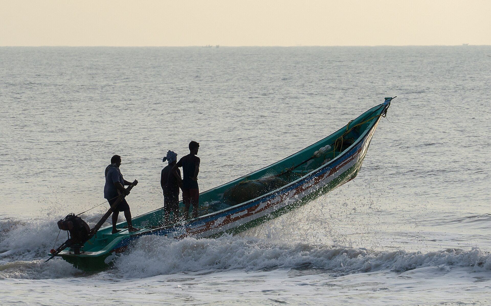
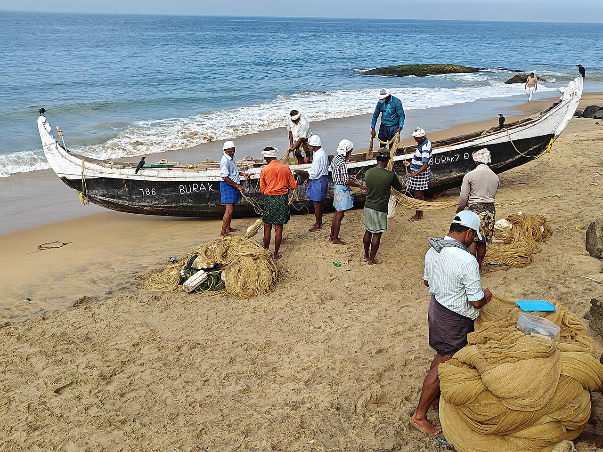

When sources disagree, ORCA takes the safer reading.
Two forecast models, official warnings and your position are cross-checked. Missing data is reported, never treated as calm.
Live findings load from the agents

Forecasts, official warnings and protected areas for your exact position, turned into one plain answer: go, or stay.
Each agent reads one kind of evidence. A consensus agent compares them, flags disagreement and leans to the safer reading.
Two forecast models, official warnings and your position are cross-checked. Missing data is reported, never treated as calm.
Live findings load from the agents
ECMWF and NOAA side by side, with gusts, swell and falling pressure.
INCOIS high-wave and swell-surge alerts, plus GDACS cyclones and tsunamis near you.
Marine reserves from OpenStreetMap and threatened species recorded nearby in OBIS.
Plans a path around rough water and land for the whole trip. If no safe route exists, it says so.

Answers in 22 Indian languages, read aloud on request, with the reasons behind every call.
"Is it safe to go to sea today?"
Public, documented sources. When one cannot be reached, ORCA tells you instead of guessing.
Locating…
--m
--ECMWF · NOAA
--kt
--ECMWF · NOAA
--°C
--Open-Meteo
--nearby
--INCOIS · GDACS
--within ~25 km
--OBIS records
Official INCOIS / GDACS warnings and the agents' assessment for this position.
Warnings
Official warnings (INCOIS high wave & swell surge, GDACS cyclones & tsunamis), protected areas and the live multi-agent assessment for your position.
Ecosystem
IUCN Red List species with occurrence records within about 25 km, from OBIS. These are historical records, not live tracking. Use them to avoid bycatch.
Answering for your position
Weather, sea state, official warnings, protected areas and species agents answer together. A consensus agent cross-checks them, and every answer shows its reasoning.
ORCA is a planning aid. In distress use VHF 16 or call 1554.